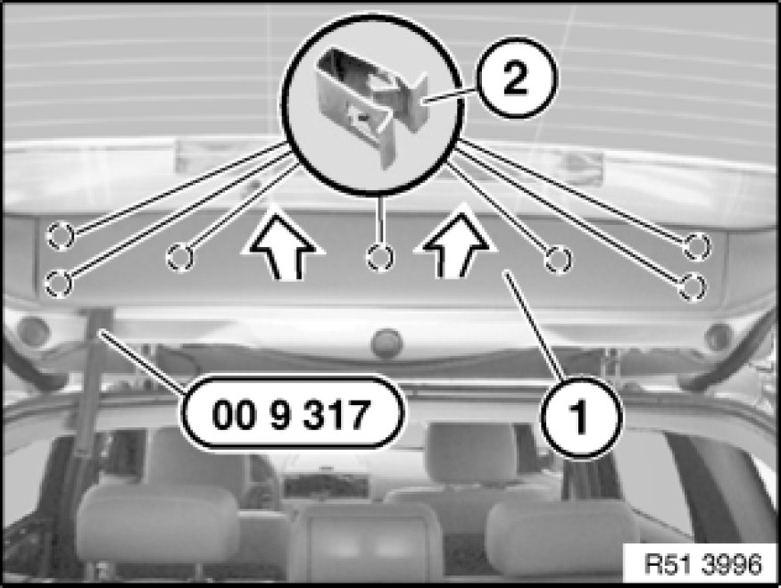
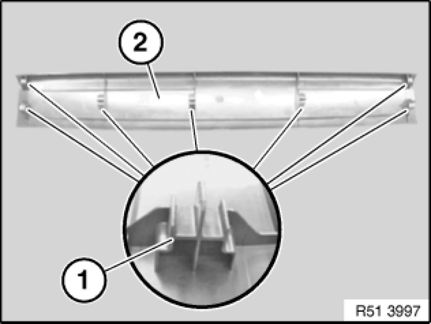

Removing and Installing/Replacing Trim for Rear Window Frame at Top
51 49 015 - Removing and installing/replacing trim for rear window frame at top

Special tools required:
- 00 9 317 00 9 317 Trim Panel Wedge

Unclip trim (1) with special tool 00 9 317 00 9 317 Trim Panel Wedge from retainers (2) and remove in direction of arrow.
Installation:
If necessary, detach clips (2) from trim (1) and insert in rear lid.
If necessary, replace faulty clips (2).

Installation:
.Guides (1) on trim (2) must not be damaged.